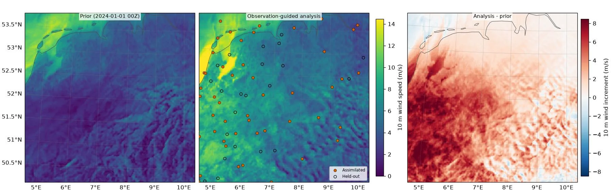

CorrDiff COSMO-REA2 Score-Based Data Assimilation¶
Assimilate weather-station observations into COSMO-REA2 with CorrDiff.
This example covers a dense-station region spanning the Netherlands, NW Germany, and the adjacent North Sea. Given an ERA5 driving state for a historical time and sparse GHCNHourly 10 m wind reports, diffusion posterior sampling (DPS) steers the diffusion downscaler's denoising trajectory toward the observations, producing a high-resolution COSMO-REA analysis guided toward what the stations actually measured.
CorrDiff-COSMO is a single-shot diagnostic downscaler. It does not propagate state between times; each call produces an independent analysis conditioned on the ERA5 input for one time.
A random subset of stations is assimilated and the analysis is compared to the held-out stations. This single case illustrates observation behavior at the held-out sites -- it is not a statistical skill assessment, and one time / split / ensemble does not guarantee improvement.
In this example you will learn:
- Load
CorrDiffCosmoEra5SDAon a COSMO-REA2 sub-domain - Fetch an ERA5 driving state (ARCO) and regrid it onto the downscaler's input grid
- Fetch GHCNHourly 10 m wind observations over the model domain
- Produce a prior (free, no-obs) downscaling and an observation-guided analysis
- Compare both fields to held-out stations (prior vs analysis RMSE)
Note
The default ~206 x 206-cell sub-domain completed in a few minutes and used about
5 GB of GPU memory in one test run (bf16). Set DOMAIN = None for the full domain;
its time and memory requirements were not validated.
Set Up¶
import os
from datetime import datetime, timedelta
import cartopy.crs as ccrs
import matplotlib.pyplot as plt
import numpy as np
import pandas as pd
import xarray as xr
from scipy.interpolate import RegularGridInterpolator
from scipy.spatial import cKDTree
INIT_TIME = datetime(2024, 1, 1, 0)
ASSIMILATE = ("u10m", "v10m")
# Set to None for the full COSMO-REA2 domain.
DOMAIN = dict(lat_min=50.2, lat_max=53.8, lon_min=4.6, lon_max=10.4)
ENSEMBLE_SIZE = 1
SAMPLER_STEPS = 12 # Reduced from 18 for this example.
SDA_STD_OBS = 0.5
SDA_GAMMA = 5e-5
VAL_FRAC = 0.3
OBS_TIME_TOLERANCE = timedelta(minutes=30)
DEVICE = "cuda:0"
DATA = ccrs.PlateCarree()
PROJ = ccrs.RotatedPole(pole_longitude=-170.0, pole_latitude=40.0)
os.makedirs("outputs", exist_ok=True)
Load Assimilation Model¶
CorrDiffCosmoEra5SDA wraps a diffusion-mode CorrDiffCosmoEra5 downscaler.
assimilate_variables is required and must be identity-transform, unit-scale
output channels -- here the 10 m wind, which matches the station reports' height.
from earth2studio.data import ARCO, GHCNHourly, fetch_data
from earth2studio.models.da import CorrDiffCosmoEra5SDA
package = CorrDiffCosmoEra5SDA.load_default_package()
sda = CorrDiffCosmoEra5SDA.load_model(
package,
assimilate_variables=ASSIMILATE,
resolution="rea2",
domain=DOMAIN,
time_tolerance=OBS_TIME_TOLERANCE,
number_of_samples=ENSEMBLE_SIZE,
sampler_steps=SAMPLER_STEPS,
sda_std_obs=SDA_STD_OBS,
sda_gamma=SDA_GAMMA,
amp=True,
).to(DEVICE)
sda.seed = 0
Console output113 lines
/__w/earth2studio/earth2studio/.venv/lib/python3.13/site-packages/torch/cuda/__init__.py:64: FutureWarning: The pynvml package is deprecated. Please install nvidia-ml-py instead. If you did not install pynvml directly, please report this to the maintainers of the package that installed pynvml for you.
import pynvml # type: ignore[import]
WARNING[XFORMERS]: xFormers can't load C++/CUDA extensions. xFormers was built for:
PyTorch 2.10.0+cu128 with CUDA 1208 (you have 2.13.0+cu130)
Python 3.10.19 (you have 3.13.13)
Please reinstall xformers (see https://github.com/facebookresearch/xformers#installing-xformers)
Memory-efficient attention, SwiGLU, sparse and more won't be available.
Set XFORMERS_MORE_DETAILS=1 for more details
CuPy distance computation test failed with error: cuVS >= 24.12 or pylibraft < 24.12 should be installed to use this feature
Downloading config.json: 0%| | 0.00/74.0 [00:00<?, ?B/s]
Downloading config.json: 100%|██████████| 74.0/74.0 [00:00<00:00, 385B/s]
Downloading config.json: 100%|██████████| 74.0/74.0 [00:00<00:00, 380B/s]
Downloading metadata.json: 0%| | 0.00/5.46k [00:00<?, ?B/s]
Downloading metadata.json: 100%|██████████| 5.46k/5.46k [00:00<00:00, 32.2kB/s]
Downloading metadata.json: 100%|██████████| 5.46k/5.46k [00:00<00:00, 31.7kB/s]
Downloading diffusion.mdlus: 0%| | 0.00/663M [00:00<?, ?B/s]
Downloading diffusion.mdlus: 2%|▏ | 10.0M/663M [00:01<01:43, 6.60MB/s]
Downloading diffusion.mdlus: 3%|▎ | 20.0M/663M [00:01<00:46, 14.4MB/s]
Downloading diffusion.mdlus: 5%|▍ | 30.0M/663M [00:01<00:29, 22.7MB/s]
Downloading diffusion.mdlus: 6%|▌ | 40.0M/663M [00:01<00:20, 31.8MB/s]
Downloading diffusion.mdlus: 8%|▊ | 50.0M/663M [00:02<00:16, 40.1MB/s]
Downloading diffusion.mdlus: 9%|▉ | 60.0M/663M [00:02<00:13, 45.3MB/s]
Downloading diffusion.mdlus: 11%|█ | 70.0M/663M [00:02<00:15, 39.8MB/s]
Downloading diffusion.mdlus: 12%|█▏ | 80.0M/663M [00:02<00:12, 47.1MB/s]
Downloading diffusion.mdlus: 14%|█▎ | 90.0M/663M [00:03<00:13, 45.2MB/s]
Downloading diffusion.mdlus: 15%|█▌ | 100M/663M [00:03<00:20, 29.0MB/s]
Downloading diffusion.mdlus: 17%|█▋ | 110M/663M [00:03<00:18, 31.9MB/s]
Downloading diffusion.mdlus: 18%|█▊ | 120M/663M [00:04<00:16, 34.2MB/s]
Downloading diffusion.mdlus: 20%|█▉ | 130M/663M [00:04<00:18, 30.0MB/s]
Downloading diffusion.mdlus: 21%|██ | 140M/663M [00:04<00:15, 34.4MB/s]
Downloading diffusion.mdlus: 23%|██▎ | 150M/663M [00:04<00:13, 39.7MB/s]
Downloading diffusion.mdlus: 24%|██▍ | 160M/663M [00:05<00:12, 43.7MB/s]
Downloading diffusion.mdlus: 26%|██▌ | 170M/663M [00:05<00:10, 48.0MB/s]
Downloading diffusion.mdlus: 27%|██▋ | 180M/663M [00:05<00:10, 48.9MB/s]
Downloading diffusion.mdlus: 29%|██▊ | 190M/663M [00:05<00:09, 50.4MB/s]
Downloading diffusion.mdlus: 30%|███ | 200M/663M [00:06<00:11, 43.0MB/s]
Downloading diffusion.mdlus: 32%|███▏ | 210M/663M [00:06<00:11, 42.6MB/s]
Downloading diffusion.mdlus: 33%|███▎ | 220M/663M [00:06<00:09, 48.8MB/s]
Downloading diffusion.mdlus: 35%|███▍ | 230M/663M [00:06<00:09, 46.0MB/s]
Downloading diffusion.mdlus: 36%|███▌ | 240M/663M [00:06<00:09, 49.2MB/s]
Downloading diffusion.mdlus: 38%|███▊ | 250M/663M [00:07<00:08, 48.6MB/s]
Downloading diffusion.mdlus: 39%|███▉ | 260M/663M [00:07<00:09, 43.3MB/s]
Downloading diffusion.mdlus: 41%|████ | 270M/663M [00:07<00:08, 49.0MB/s]
Downloading diffusion.mdlus: 42%|████▏ | 280M/663M [00:07<00:09, 40.6MB/s]
Downloading diffusion.mdlus: 44%|████▎ | 290M/663M [00:08<00:08, 45.5MB/s]
Downloading diffusion.mdlus: 45%|████▌ | 300M/663M [00:08<00:08, 45.5MB/s]
Downloading diffusion.mdlus: 47%|████▋ | 310M/663M [00:08<00:07, 50.3MB/s]
Downloading diffusion.mdlus: 48%|████▊ | 320M/663M [00:08<00:07, 45.4MB/s]
Downloading diffusion.mdlus: 50%|████▉ | 330M/663M [00:08<00:06, 50.8MB/s]
Downloading diffusion.mdlus: 51%|█████ | 340M/663M [00:09<00:06, 55.2MB/s]
Downloading diffusion.mdlus: 53%|█████▎ | 350M/663M [00:09<00:05, 60.7MB/s]
Downloading diffusion.mdlus: 54%|█████▍ | 360M/663M [00:09<00:05, 63.4MB/s]
Downloading diffusion.mdlus: 56%|█████▌ | 370M/663M [00:09<00:04, 66.0MB/s]
Downloading diffusion.mdlus: 57%|█████▋ | 380M/663M [00:09<00:04, 68.9MB/s]
Downloading diffusion.mdlus: 59%|█████▉ | 390M/663M [00:09<00:04, 58.6MB/s]
Downloading diffusion.mdlus: 60%|██████ | 400M/663M [00:10<00:04, 59.0MB/s]
Downloading diffusion.mdlus: 62%|██████▏ | 410M/663M [00:10<00:04, 56.6MB/s]
Downloading diffusion.mdlus: 63%|██████▎ | 420M/663M [00:10<00:04, 55.9MB/s]
Downloading diffusion.mdlus: 65%|██████▍ | 430M/663M [00:10<00:04, 60.7MB/s]
Downloading diffusion.mdlus: 66%|██████▋ | 440M/663M [00:10<00:03, 63.1MB/s]
Downloading diffusion.mdlus: 68%|██████▊ | 450M/663M [00:11<00:04, 49.9MB/s]
Downloading diffusion.mdlus: 69%|██████▉ | 460M/663M [00:11<00:03, 54.0MB/s]
Downloading diffusion.mdlus: 71%|███████ | 470M/663M [00:11<00:03, 53.6MB/s]
Downloading diffusion.mdlus: 72%|███████▏ | 480M/663M [00:11<00:03, 55.1MB/s]
Downloading diffusion.mdlus: 74%|███████▍ | 490M/663M [00:11<00:03, 49.4MB/s]
Downloading diffusion.mdlus: 75%|███████▌ | 500M/663M [00:12<00:03, 48.7MB/s]
Downloading diffusion.mdlus: 77%|███████▋ | 510M/663M [00:12<00:03, 47.7MB/s]
Downloading diffusion.mdlus: 78%|███████▊ | 520M/663M [00:12<00:03, 41.2MB/s]
Downloading diffusion.mdlus: 80%|███████▉ | 530M/663M [00:12<00:03, 42.7MB/s]
Downloading diffusion.mdlus: 81%|████████▏ | 540M/663M [00:13<00:02, 45.3MB/s]
Downloading diffusion.mdlus: 83%|████████▎ | 550M/663M [00:13<00:02, 50.4MB/s]
Downloading diffusion.mdlus: 84%|████████▍ | 560M/663M [00:13<00:02, 52.9MB/s]
Downloading diffusion.mdlus: 86%|████████▌ | 570M/663M [00:13<00:01, 56.2MB/s]
Downloading diffusion.mdlus: 87%|████████▋ | 580M/663M [00:13<00:01, 48.0MB/s]
Downloading diffusion.mdlus: 89%|████████▉ | 590M/663M [00:13<00:01, 53.8MB/s]
Downloading diffusion.mdlus: 90%|█████████ | 600M/663M [00:14<00:01, 59.1MB/s]
Downloading diffusion.mdlus: 92%|█████████▏| 610M/663M [00:14<00:00, 63.7MB/s]
Downloading diffusion.mdlus: 93%|█████████▎| 620M/663M [00:14<00:00, 68.6MB/s]
Downloading diffusion.mdlus: 95%|█████████▍| 630M/663M [00:14<00:00, 70.0MB/s]
Downloading diffusion.mdlus: 96%|█████████▋| 640M/663M [00:14<00:00, 73.5MB/s]
Downloading diffusion.mdlus: 98%|█████████▊| 650M/663M [00:14<00:00, 74.0MB/s]
Downloading diffusion.mdlus: 99%|█████████▉| 660M/663M [00:14<00:00, 76.6MB/s]
Downloading diffusion.mdlus: 100%|██████████| 663M/663M [00:14<00:00, 46.5MB/s]
Downloading stats.json: 0%| | 0.00/7.07k [00:00<?, ?B/s]
Downloading stats.json: 100%|██████████| 7.07k/7.07k [00:00<00:00, 26.3kB/s]
Downloading stats.json: 100%|██████████| 7.07k/7.07k [00:00<00:00, 26.1kB/s]
Downloading grids.nc: 0%| | 0.00/4.32M [00:00<?, ?B/s]
Downloading grids.nc: 100%|██████████| 4.32M/4.32M [00:00<00:00, 6.48MB/s]
Downloading grids.nc: 100%|██████████| 4.32M/4.32M [00:00<00:00, 6.42MB/s]
Downloading invariants_norm_stats.json: 0%| | 0.00/992 [00:00<?, ?B/s]
Downloading invariants_norm_stats.json: 100%|██████████| 992/992 [00:00<00:00, 5.51kB/s]
Downloading invariants_norm_stats.json: 100%|██████████| 992/992 [00:00<00:00, 5.41kB/s]
Downloading invariants_rea2_ext.nc: 0%| | 0.00/114M [00:00<?, ?B/s]
Downloading invariants_rea2_ext.nc: 9%|▉ | 10.0M/114M [00:00<00:09, 11.6MB/s]
Downloading invariants_rea2_ext.nc: 18%|█▊ | 20.0M/114M [00:01<00:04, 20.0MB/s]
Downloading invariants_rea2_ext.nc: 26%|██▋ | 30.0M/114M [00:01<00:02, 30.8MB/s]
Downloading invariants_rea2_ext.nc: 35%|███▌ | 40.0M/114M [00:01<00:01, 40.1MB/s]
Downloading invariants_rea2_ext.nc: 44%|████▍ | 50.0M/114M [00:01<00:01, 49.3MB/s]
Downloading invariants_rea2_ext.nc: 53%|█████▎ | 60.0M/114M [00:01<00:00, 56.6MB/s]
Downloading invariants_rea2_ext.nc: 62%|██████▏ | 70.0M/114M [00:01<00:00, 63.9MB/s]
Downloading invariants_rea2_ext.nc: 70%|███████ | 80.0M/114M [00:02<00:00, 42.9MB/s]
Downloading invariants_rea2_ext.nc: 79%|███████▉ | 90.0M/114M [00:02<00:00, 49.9MB/s]
Downloading invariants_rea2_ext.nc: 88%|████████▊ | 100M/114M [00:02<00:00, 56.8MB/s]
Downloading invariants_rea2_ext.nc: 97%|█████████▋| 110M/114M [00:02<00:00, 61.9MB/s]
Downloading invariants_rea2_ext.nc: 100%|██████████| 114M/114M [00:02<00:00, 44.8MB/s]
2026-08-20 11:14:54.790 | INFO | earth2studio.models.dx.corrdiff_cosmo_era5:load_model:1916 - Loaded CorrDiffCosmoEra5 resolution=rea2 mode=diffusion (22 output channels)Fetch Coarse-Resolution State¶
Fetch an ERA5 analysis (ARCO) for the historical time and regrid it onto the
downscaler's regional input grid. The result is an xr.DataArray with dims
(time, variable, lat, lon) -- the same driving state the downscaler
conditions on; the time coord also drives its day/night (solar) input.
def regrid_to_input(x_src, src_coords, dvars, dlat, dlon):
"""Subset to the downscaler's ERA5 variables and bilinearly regrid a global
regular lat/lon field onto its regional grid. Returns [n_var, n_lat, n_lon]."""
svars = list(src_coords["variable"])
slat = np.asarray(src_coords["lat"]).astype(float)
slon = np.asarray(src_coords["lon"]).astype(float)
field = x_src.reshape(-1, len(svars), len(slat), len(slon))[0].float().cpu().numpy()
field = field[[svars.index(v) for v in dvars]] # select the ERA5 channels
if slat[0] > slat[-1]: # ensure ascending latitude
slat, field = slat[::-1], field[:, ::-1, :]
field_w = np.concatenate([field, field[:, :, 0:1]], axis=-1) # lon wrap column
slon_w = np.concatenate([slon, [slon[0] + 360.0]])
lon2d, lat2d = np.meshgrid(dlon % 360.0, dlat)
pts = np.stack([lat2d.ravel(), lon2d.ravel()], axis=-1)
out = np.empty((len(dvars), len(dlat), len(dlon)), np.float32)
for c in range(len(dvars)):
out[c] = RegularGridInterpolator(
(slat, slon_w), field_w[c], bounds_error=False, fill_value=None
)(pts).reshape(len(dlat), len(dlon))
return out
ic = sda.init_coords()[0]
dvars = list(ic["variable"])
dlat, dlon = np.asarray(ic["lat"]), np.asarray(ic["lon"])
t = np.array([np.datetime64(INIT_TIME)])
x_src, c_src = fetch_data(
ARCO(),
time=t,
variable=np.array(dvars),
lead_time=np.array([np.timedelta64(0, "h")]),
device=DEVICE,
)
era5 = regrid_to_input(x_src, c_src, dvars, dlat, dlon)
x_da = xr.DataArray(
data=era5[None],
dims=["time", "variable", "lat", "lon"],
coords={"time": t, "variable": np.array(dvars), "lat": dlat, "lon": dlon},
)
Console output4 lines
Fetching ARCO data: 0%| | 0/12 [00:00<?, ?it/s]
Fetching ARCO data: 67%|██████▋ | 8/12 [00:00<00:00, 24.65it/s]
Fetching ARCO data: 92%|█████████▏| 11/12 [00:00<00:00, 22.87it/s]
Fetching ARCO data: 100%|██████████| 12/12 [00:00<00:00, 25.33it/s]Fetch Observations¶
Fetch paired wind reports and split stations into assimilated and held-out sets.
glat = sda.model.lat_output_numpy
glon = sda.model.lon_output_numpy
bbox = (float(glat.min()), float(glon.min()), float(glat.max()), float(glon.max()))
stations = GHCNHourly.get_stations_bbox(bbox)
ghcn = GHCNHourly(stations=stations, time_tolerance=OBS_TIME_TOLERANCE, verbose=False)
raw = ghcn(INIT_TIME, list(ASSIMILATE))
raw = raw[raw["variable"].isin(ASSIMILATE)].dropna(subset=["observation"]).copy()
raw["dt"] = (pd.to_datetime(raw["time"]) - INIT_TIME).abs()
raw = raw.sort_values("dt").drop_duplicates(["station", "variable"], keep="first")
complete_stations = raw.groupby("station")["variable"].nunique().eq(len(ASSIMILATE))
raw = raw[raw["station"].isin(complete_stations[complete_stations].index)]
station_ids = sorted(raw["station"].unique())
print(f"Stations with {'+'.join(ASSIMILATE)} at {INIT_TIME}: {len(station_ids)}")
if len(station_ids) < 2:
raise RuntimeError(
f"Need at least 2 usable stations (got {len(station_ids)}); widen DOMAIN, "
"loosen OBS_TIME_TOLERANCE, or choose another time."
)
rng = np.random.default_rng(0)
n_val = min(len(station_ids) - 1, max(1, int(round(len(station_ids) * VAL_FRAC))))
val_ids = set(rng.choice(station_ids, size=n_val, replace=False))
obs_cols = ["time", "lat", "lon", "variable", "observation"]
is_held_out = raw["station"].isin(val_ids)
assimilated_reports = raw[~is_held_out]
held_out_reports = raw[is_held_out]
assimilation_obs = assimilated_reports[obs_cols]
n_assim = len(station_ids) - len(val_ids)
print(f"Assimilated: {n_assim} stations | Held-out: {len(val_ids)} stations")
Console output2 lines
Stations with u10m+v10m at 2024-01-01 00:00:00: 77
Assimilated: 54 stations | Held-out: 23 stationsPrior vs. Observation-Guided Analysis¶
Run the downscaler twice on the same ERA5 state: once with no observations (the
prior, obs=None) and once with the observations selected for assimilation.
Both return an ensemble with dims (time, sample, variable, y, x).
def to_numpy(da):
"""Return the DataArray data as a NumPy array."""
arr = da.data
return arr.get() if hasattr(arr, "get") else np.asarray(arr)
post = sda(x_da, assimilation_obs) # analysis (observation-guided)
free = sda(x_da) # prior (free, no-obs downscaling)
# Locate the wind-component channels and output grid used for evaluation and plotting.
output_variables = list(post["variable"].values)
u_index = output_variables.index("u10m")
v_index = output_variables.index("v10m")
output_lat = np.asarray(post["lat"])
output_lon = np.asarray(post["lon"])
post_np, free_np = to_numpy(post), to_numpy(free) # [time, sample, variable, y, x]
Console output1 line
2026-08-20 11:15:36.180 | WARNING | earth2studio.models.da.utils:dfseries_to_torch:99 - Converting pandas Series to GPU tensor. Consider installing cudf for zero-copy transfer and better performance.Single Posterior Sample¶
Compare the observation-guided analysis with the prior using 10 m wind speed and vector-wind RMSE.
ws_post = np.hypot(post_np[0, :, u_index], post_np[0, :, v_index]).mean(0)
ws_free = np.hypot(free_np[0, :, u_index], free_np[0, :, v_index]).mean(0)
analysis_u = post_np[0, :, u_index].mean(0)
analysis_v = post_np[0, :, v_index].mean(0)
prior_u = free_np[0, :, u_index].mean(0)
prior_v = free_np[0, :, v_index].mean(0)
print(
f"Finite values: Posterior={np.isfinite(post_np).all()}, "
f"Prior={np.isfinite(free_np).all()}"
)
Console output1 line
Finite values: Posterior=True, Prior=TrueCompare to Held-Out Stations¶
Compute the vector-wind RMSE of each analysis against the observations, at the stations' nearest output cells. The held-out stations were never assimilated, so their prior-vs-posterior RMSE illustrates how the analysis behaves at unassimilated sites for this single case -- it is a diagnostic, not a statistical skill claim, and a single time/split/ensemble does not guarantee improvement.
def vector_rmse_at(df, u_field, v_field):
"""Compute vector wind RMSE at station locations."""
u_reports = df[df["variable"] == "u10m"][["station", "lat", "lon", "observation"]]
v_reports = df[df["variable"] == "v10m"][["station", "observation"]]
merged = u_reports.merge(v_reports, on="station", suffixes=("_u", "_v"))
if not len(merged):
return float("nan")
tree = cKDTree(np.column_stack([output_lat.ravel(), (output_lon % 360).ravel()]))
_, flat = tree.query(np.column_stack([merged["lat"], merged["lon"] % 360]))
bi, bj = np.unravel_index(flat, output_lat.shape)
u_error = u_field[bi, bj] - merged["observation_u"].values
v_error = v_field[bi, bj] - merged["observation_v"].values
return float(np.sqrt(np.mean(u_error**2 + v_error**2)))
held_out_prior = vector_rmse_at(held_out_reports, prior_u, prior_v)
held_out_analysis = vector_rmse_at(held_out_reports, analysis_u, analysis_v)
assimilated_prior = vector_rmse_at(assimilated_reports, prior_u, prior_v)
assimilated_analysis = vector_rmse_at(assimilated_reports, analysis_u, analysis_v)
print("Vector 10 m wind RMSE vs. GHCNHourly (m/s)")
print(f"Held-out: Prior={held_out_prior:.3f}, Analysis={held_out_analysis:.3f}")
print(
f"Assimilated: Prior={assimilated_prior:.3f}, Analysis={assimilated_analysis:.3f}"
)
Console output3 lines
Vector 10 m wind RMSE vs. GHCNHourly (m/s)
Held-out: Prior=6.285, Analysis=5.741
Assimilated: Prior=6.244, Analysis=85.137Plot the Analyses and Their Difference¶
Finally, we can plot the results:
- Left: prior 10 m wind speed.
- Center: observation-guided analysis with assimilated and held-out stations.
- Right: signed analysis increment.
title_box = {"facecolor": "white", "alpha": 0.75, "edgecolor": "none", "pad": 2}
def format_map(ax, title, left_labels=False):
"""Style a map axis."""
ax.set_title(title, fontsize=9, y=0.95, color="black", bbox=title_box, zorder=5)
ax.set_extent(extent, crs=PROJ)
ax.coastlines(resolution="50m", linewidth=0.6, color="0.3")
gridlines = ax.gridlines(
crs=DATA, draw_labels=True, linewidth=0.3, color="0.5", alpha=0.5
)
gridlines.x_inline = gridlines.y_inline = False
gridlines.top_labels = gridlines.right_labels = False
gridlines.left_labels = left_labels
gridlines.rotate_labels = False
assimilated_stations = assimilated_reports.drop_duplicates("station")
held_out_stations = held_out_reports.drop_duplicates("station")
rp = PROJ.transform_points(DATA, output_lon, output_lat)
x_rotated, y_rotated = rp[..., 0], rp[..., 1]
extent = [x_rotated.min(), x_rotated.max(), y_rotated.min(), y_rotated.max()]
speed_max = float(max(np.nanpercentile(ws_free, 99), np.nanpercentile(ws_post, 99)))
speed_style = {
"transform": DATA,
"shading": "nearest",
"cmap": "viridis",
"vmin": 0,
"vmax": speed_max,
}
increment = ws_post - ws_free
increment_limit = float(np.nanpercentile(np.abs(increment), 99))
plt.close("all")
fig, axes = plt.subplots(
1, 3, figsize=(15, 4.8), subplot_kw={"projection": PROJ}, layout="constrained"
)
prior_mesh = axes[0].pcolormesh(output_lon, output_lat, ws_free, **speed_style)
axes[1].pcolormesh(output_lon, output_lat, ws_post, **speed_style)
increment_mesh = axes[2].pcolormesh(
output_lon,
output_lat,
increment,
transform=DATA,
shading="nearest",
cmap="RdBu_r",
vmin=-increment_limit,
vmax=increment_limit,
)
format_map(axes[0], f"Prior ({INIT_TIME:%Y-%m-%d %HZ})", left_labels=True)
format_map(axes[1], "Observation-guided analysis")
format_map(axes[2], "Analysis - prior")
station_styles = [
(assimilated_stations, {"c": "#D55E00", "linewidths": 0.4, "label": "Assimilated"}),
(held_out_stations, {"facecolors": "none", "linewidths": 0.8, "label": "Held-out"}),
]
for stations, style in station_styles:
axes[1].scatter(
stations["lon"],
stations["lat"],
s=24,
edgecolors="k",
transform=DATA,
zorder=3,
**style,
)
axes[1].legend(loc="lower right", fontsize=7)
colorbar_style = {"shrink": 0.82, "pad": 0.02}
fig.colorbar(prior_mesh, ax=axes[:2], label="10 m wind speed (m/s)", **colorbar_style)
fig.colorbar(
increment_mesh, ax=axes[2], label="10 m wind increment (m/s)", **colorbar_style
)
plt.savefig("outputs/03_corrdiff_cosmo_sda.jpg", dpi=120)
Console output2 lines
/__w/earth2studio/earth2studio/.venv/lib/python3.13/site-packages/cartopy/io/__init__.py:242: DownloadWarning: Downloading: https://naturalearth.s3.amazonaws.com/50m_physical/ne_50m_coastline.zip
warnings.warn(f'Downloading: {url}', DownloadWarning)